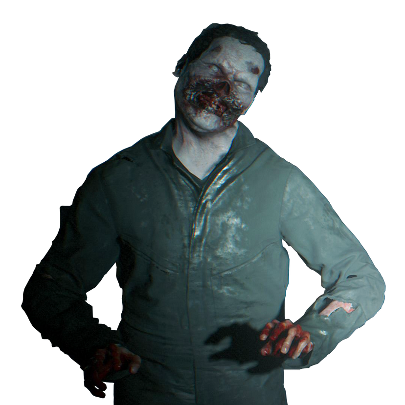

UMBRELLA CORPORATION - CLASSIFIED RESEARCH FILE
FILE ID: BOW-001 | CLEARANCE LEVEL: 3

SUBJECT: T-002 | STATUS: ACTIVE
Bio-Organic Weapon (BOW) - Type B
T-Virus (Tyrant Virus)
LOW
Reanimated human hosts exhibiting aggressive tendencies. Severely degraded motor function and cognitive ability. Subjects are drawn to sound and movement and tend to cluster in groups. Decomposition accelerates post-mutation.
Cranial trauma, fire, and destruction of brain tissue. Slow movement makes evasion viable.
Standard T-Virus reanimation results. Subject pool sourced from Raccoon City civilian population. Containment remains manageable at low numbers. Mass outbreak scenarios require immediate quarantine protocols.